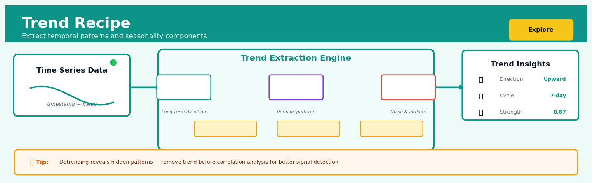
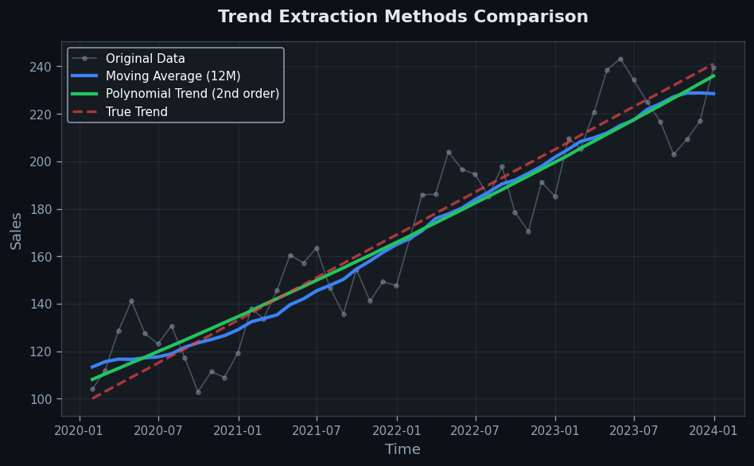
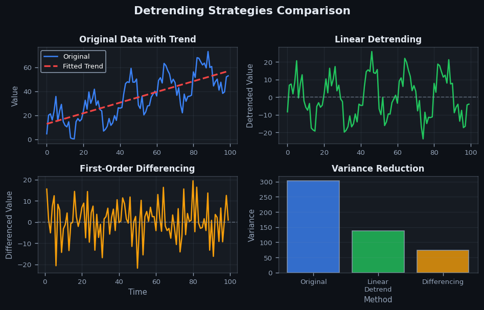

Trend Recipe#


Most analysts make the mistake of applying trend extraction once and moving on, but you should actually validate trend stability across different window sizes to ensure you're not overfitting to noise. I've seen production models fail because they baked in a spurious 3-month trend that was just seasonal variation in disguise. Always cross-validate your decomposition method choice against holdout data, especially when your downstream models depend on stationarity assumptions.
The 60-Second Version#
What it does: Trend Recipe strips away seasonal patterns and random fluctuations to reveal whether your metric is genuinely going up, down, or staying flat over time.
When to use it: Your sales, traffic, or operational data bounces around with weekly or monthly patterns, and you need to know if the underlying business is actually growing or declining.
What you get back: A smoothed trend line showing the true direction, plus separated seasonal and residual components you can analyze individually or remove from forecasts.
Difficulty |
Easy |
Typical runtime |
Seconds on 100K rows |
What you bring |
Time series data with regular intervals (daily, weekly, monthly) |
What you get |
Three separate series: trend, seasonal pattern, and leftover noise |
Heuristix bucket |
Explore — Shaping & Transforming Data |
The trend line is not a forecast—it shows you where you’ve been, not where you’re going, so always pair it with forward-looking analysis before making decisions.
Learning Objectives#
After reading this chapter, a business user will be able to:
Identify when your metric’s long-term direction matters more than short-term fluctuations, such as separating genuine sales growth from seasonal holiday spikes or promotional bumps.
Explain to stakeholders whether an observed change represents a true shift in trend or merely seasonal variation, using decomposition charts to support your interpretation.
Decide when to adjust forecasts, budgets, or strategic plans based on emerging trend changes detected in your key performance indicators.
After reading this chapter, a data scientist will be able to:
Implement seasonal decomposition using STL, classical decomposition, or moving average methods while correctly handling missing values, irregular intervals, and series without clear seasonality.
Select the appropriate seasonal period and smoothing window size by balancing responsiveness to genuine trend changes against stability in the face of noise.
Diagnose when decomposition has failed due to insufficient data, changing seasonal patterns, or structural breaks, and apply appropriate remedies or alternative methods.
Overview#
The Trend Recipe extracts the underlying directional movement from time series data by decomposing observations into trend, seasonal, and residual components. Its core purpose is to isolate the long-term trajectory of a metric—whether rising, falling, or stationary—while filtering out cyclical patterns and random noise. This technique belongs to the family of time series decomposition methods, closely related to moving average smoothing, exponential smoothing, and structural time series models.
When to Use This#
Use this when you need to identify whether a KPI (revenue, customer count, defect rate) is fundamentally improving or deteriorating over time, independent of seasonal fluctuations.
Use this when preparing data for forecasting models that require deseasonalised inputs, as many regression-based forecasters perform better on trend-adjusted series.
Use this when communicating long-term business performance to executives who need to see “the signal through the noise” without being distracted by monthly or quarterly cycles.
Use this when comparing growth trajectories across multiple products, regions, or business units that have different seasonal profiles but need to be evaluated on underlying momentum.
Use this when detecting structural breaks or inflection points in business metrics—moments when the trend fundamentally changed direction.
Use this when you have at least two complete seasonal cycles of data (e.g., 24 months of monthly data) to reliably separate trend from seasonality.
Do NOT use this when your series is too short to estimate seasonality reliably—applying decomposition to 6 months of monthly data will produce unreliable trend estimates.
Do NOT use this when the time series has no meaningful seasonal component; simple smoothing methods may be more appropriate and interpretable.
Do NOT use this when you need real-time trend detection with minimal lag—decomposition methods inherently smooth over recent observations and may delay detection of sudden changes.
Do NOT use this when the data contains multiple overlapping seasonal patterns (e.g., daily, weekly, and annual) that require more sophisticated methods like STL with multiple seasonal periods or MSTL.
Questions This Answers#
Understanding What’s Really Happening Beneath the Noise#
Are our monthly sales actually growing, or are we just seeing the usual holiday spike?
Is customer churn getting worse over time, or did we just have a bad couple of weeks?
When we look past the weekly ups and downs, what’s the real direction of our website traffic this year?
Is our app engagement genuinely declining, or are we being fooled by summer seasonality?
Which product lines are showing real momentum versus just riding seasonal demand?
Are our operational costs trending upward, or is this quarter’s jump just a one-time thing?
Planning and Forecasting with Confidence#
If our subscriber growth continues on its current trajectory, where will we be in six months?
Based on the underlying trend, what’s a realistic revenue target for next year that accounts for actual growth, not just seasonal peaks?
Should we be concerned about this metric, or is the long-term trend still healthy despite recent volatility?
Are we on track to hit our annual retention goal when we strip out the back-to-school bump we see every September?
Making Smarter Strategic Decisions#
Should we double down on this market where we’re seeing steady gains, or invest in that market with higher recent numbers but no clear trend?
Is it worth launching a retention campaign now, or is the trend showing things are already improving naturally?
Which of our three sales channels shows the strongest underlying growth potential when we remove seasonal effects?
Are the changes we implemented in Q2 actually working, or are recent improvements just normal seasonal variation?
How It Works#
Imagine Sarah tracks her coffee shop’s daily revenue for two years. Every weekend, sales spike because of brunch crowds. Every December, holiday shoppers create a massive bump. Random events—a rainy Tuesday, a burst water pipe—cause unpredictable dips and jumps. Sarah wants to answer one critical question: “Setting aside weekends, holidays, and bad-luck days, is my business actually growing?” The Trend Recipe answers exactly this question by peeling away the predictable patterns and the noise to reveal the underlying direction her business is truly heading.
ORIGINAL TIME SERIES DATA
Revenue
($) * * * * * * ← Seasonal peaks
800 * * * * * * * * * * ** * ** (weekends)
600 * * * * * * * * * * * * * * ** ***
400 * * * * * * * * * * * * * * * *** ← Random noise
200* * * * * * * * * * * * * * * * ← Underlying trend
0└─┬─┬─┬─┬─┬─┬─┬─┬─┬─┬─┬─┬─┬─┬─┬─→
Jan Feb Mar Apr May Jun Jul Aug Sep
(24 months)
DECOMPOSITION PROCESS
↓
┌───────────┬──────────────┬─────────────┐
│ TREND │ SEASONAL │ RESIDUAL │
│ │ │ │
800│ ↗ │ ↗ ↘ ↗ ↘ ↗ │ • •• • │
600│ ↗ │ ↗ ↘ ↗ ↘ │ • • • • │
400│ ↗ │↗ ↘ ↗ ↘ │• • • • │
200│↗ │ ↘ ↘ │ • • • │
0└───────────┴──────────────┴─────────────┘
Smooth Repeating Random
upward weekly/monthly unpredictable
trajectory patterns fluctuations
Step 1: Identify the repeating cycles. The algorithm first hunts for patterns that occur at regular intervals. It checks: do values tend to be higher every seventh day (weekends)? Every thirtieth day (monthly billing cycles)? Every twelfth month (holiday seasons)? It measures how much the data rises and falls at each recurring interval.
Step 2: Calculate the average seasonal pattern. Once it knows the cycle length—say, weekly—it stacks all the Mondays together, all the Tuesdays together, and so on. Then it calculates what a typical Monday looks like compared to the weekly average, what a typical Tuesday looks like, and creates a repeating seasonal template that captures these predictable ups and downs.
Step 3: Remove the seasonal pattern from the original data. The algorithm subtracts this seasonal template from every observation. If Saturdays are typically thirty percent above the weekly average, it adjusts every Saturday downward by that amount. What remains is data with the seasonal swings stripped out.
Step 4: Smooth out the remaining variation. Now the algorithm applies a smoothing technique—like a moving average that slides across the data—to filter out random day-to-day jitter. This creates a smooth line that shows the fundamental direction: consistently upward, downward, or flat.
Step 5: Separate what’s left into trend and noise. The smooth line becomes the trend component. Whatever’s left over—the differences between actual values and the combination of trend plus seasonal—becomes the residual component: truly random events that follow no pattern.
The key insight: By recognizing that time series data is a mixture of three distinct signals—long-term direction, predictable cycles, and random noise—we can mathematically unmix them to see each component clearly, just like separating instruments in a recorded song.
The Intuition#
Imagine you are standing on a beach watching the tide come in. At any given moment, waves crash and retreat, creating rapid oscillations in the water level at your feet. Beneath this wave-by-wave variation, there is a slower rhythm: the tide itself, rising and falling over hours. And beneath even that, there might be a longer-term trend—perhaps sea levels are gradually rising over decades due to climate change. If someone asked you whether the ocean is “higher” today than yesterday, you would instinctively try to mentally filter out the waves and focus on the underlying tide. Time series decomposition does exactly this, but mathematically.
The Trend Recipe treats your observed data as a composite signal made up of distinct components layered on top of each other. The trend component represents the fundamental direction of the series—the slow-moving baseline that captures whether things are genuinely getting better or worse over extended periods. The seasonal component captures predictable, recurring patterns tied to calendar cycles: weekly patterns in foot traffic, monthly patterns in utility bills, or annual patterns in retail sales. The residual component is everything left over—random fluctuations, measurement noise, one-off events, and anything else that doesn’t fit the systematic patterns.
The power of this decomposition lies in its ability to answer different questions with different components. When a CFO asks “Are sales growing?”, they want the trend. When a supply chain manager asks “How much extra inventory do we need for December?”, they want the seasonal component. When a data quality analyst asks “Was last Tuesday’s spike a real anomaly?”, they want to examine the residual after removing trend and seasonality. By separating these components, the Trend Recipe gives you the right lens for each business question.
The Mathematics#
Problem Setup and Notation#
Let \(\{y_t\}_{t=1}^{T}\) denote a time series of \(T\) observations measured at equally spaced intervals. We assume the series can be decomposed into three unobserved components:
where \(T_t\) is the trend component, \(S_t\) is the seasonal component with period \(m\) (e.g., \(m=12\) for monthly data with annual seasonality), and \(R_t\) is the residual component.
Note
This is the additive decomposition model. When the seasonal amplitude scales with the level of the series, a multiplicative model \(y_t = T_t \cdot S_t \cdot R_t\) is more appropriate. The multiplicative case can be transformed to additive by taking logarithms: \(\log(y_t) = \log(T_t) + \log(S_t) + \log(R_t)\).
Classical Decomposition#
The classical decomposition algorithm proceeds in three stages:
Step 1: Trend Estimation via Moving Average
The trend \(\hat{T}_t\) is estimated using a centred moving average of order \(m\). For odd \(m\):
For even \(m\) (the common case with \(m=12\) for monthly data), a \(2 \times m\) moving average is used to ensure the filter is centred:
This can be written as a convolution with symmetric weights \(w_j\):
where \(w_{\pm m/2} = \frac{1}{2m}\) and \(w_j = \frac{1}{m}\) for \(|j| < m/2\).
Step 2: Detrending and Seasonal Estimation
The detrended series is computed as:
The seasonal component is estimated by averaging the detrended values for each seasonal period. For period \(k \in \{1, 2, \ldots, m\}\):
where \(n_k\) is the number of observations falling in period \(k\). The seasonal estimates are then normalised to sum to zero:
The seasonal component for each observation is \(\hat{S}_t = \hat{S}_{(t \mod m)}\).
Step 3: Residual Computation
The residual is simply:
Assumptions#
Additivity: The components combine additively (or multiplicatively after log transformation).
Deterministic seasonality: The seasonal pattern is constant across all years.
Stationarity of trend: The trend is smooth and slowly varying.
Sufficient data: At least \(m\) observations are required; two or more complete cycles are strongly recommended.
STL Decomposition#
Seasonal and Trend decomposition using Loess (STL), introduced by Cleveland et al. (1990), addresses limitations of classical decomposition by allowing the seasonal component to vary over time and providing robustness to outliers.
STL uses locally weighted regression (loess) for both trend and seasonal estimation. The algorithm iterates between:
Seasonal smoothing: For each subseries of observations from the same seasonal period, fit a loess smoother.
Trend smoothing: Apply loess to the seasonally adjusted series.
The loess smoother at point \(t\) minimises:
where \(w_i(t)\) is the tricube weight function:
and \(h\) is the bandwidth controlling smoothness. The function \(\rho(\cdot)\) is a robustness weight (bisquare function) that downweights outliers.
Edge Cases and Degenerate Conditions#
Trend undefined at boundaries: Moving average filters cannot compute trend for the first and last \(m/2\) observations. STL handles this via loess extrapolation.
Missing data: Classical decomposition fails with gaps; STL can handle irregular spacing with appropriate loess implementations.
Non-integer seasonality: When \(m\) is not an integer (e.g., 365.25 days per year), Fourier-based methods or fractional moving averages are required.
Understanding the Mathematics#
Additive Decomposition#
The equation:
Read it aloud:
“The observed value at time t equals the trend component at time t, plus the seasonal component at time t, plus the residual component at time t.”
What each symbol means:
\(y_t\) = the actual observed value at time period t (e.g., sales in January)
\(T_t\) = the trend component—the smooth, long-term direction
\(S_t\) = the seasonal component—the repeating cyclical pattern
\(R_t\) = the residual component—random noise and irregularities
\(t\) = the time index (week 1, week 2, etc.)
A concrete numerical example:
Your bakery records \(42,000 in revenue for March 2024. The trend component is \)38,000 (your baseline growing sales). The seasonal component is +\(5,000 (spring weddings boost demand). The residual is −\)1,000 (unexpected road construction deterred walk-ins). Therefore: \(42,000 = \)38,000 + \(5,000 + (−\)1,000).
Why this equation matters:
Additive decomposition lets us separate signal from noise—without it, we’d mistake seasonal spikes for genuine growth or blame random fluctuations on business strategy.
Moving Average Trend Estimation#
The equation:
where \(m = 2k + 1\) is the window width.
Read it aloud:
“The trend at time t equals one divided by the window size, multiplied by the sum of all observed values from k periods before t to k periods after t.”
What each symbol means:
\(T_t\) = the smoothed trend estimate at time t
\(m\) = the total number of observations in the moving window
\(k\) = how many periods to look backward and forward
\(y_{t+j}\) = the observed value at offset j from time t
\(\sum\) = “add up all these values”
A concrete numerical example:
Your website traffic for five consecutive days is: 1,200, 1,350, 1,100, 1,400, 1,250 visitors. Using a 5-day centered moving average (\(k=2\), so \(m=5\)), the trend for day 3 is: \(T_3 = \frac{1}{5}(1,200 + 1,350 + 1,100 + 1,400 + 1,250) = \frac{6,300}{5} = 1,260\) visitors.
Why this equation matters:
Moving averages smooth out daily volatility to reveal the underlying trajectory—without this, we’d react to every random spike as if it were a meaningful shift.
Seasonal Component Extraction#
The equation:
followed by averaging across cycles:
Read it aloud:
“The seasonal component at time t equals the observed value minus the trend value. Then, the average seasonal effect for position i in the cycle equals the sum of all seasonal components at that position, divided by how many times we observed it.”
What each symbol means:
\(S_t\) = raw seasonal deviation at time t
\(\bar{S}_i\) = the average seasonal effect for cycle position i (e.g., “January effect”)
\(n_i\) = the number of cycles observed at position i
“cycle i” = all time periods sharing the same seasonal position (all Januaries, all Mondays, etc.)
A concrete numerical example:
Your Q1 revenue is \(200,000 with a trend of \)180,000, giving \(S_{Q1} = \)20,000. Over three years, you observe Q1 seasonal effects of \(20,000, \)18,000, and \(22,000. The average Q1 seasonal component is: \)\bar{S}_{Q1} = \frac{20,000 + 18,000 + 22,000}{3} = \frac{60,000}{3} = $20,000.
Why this equation matters:
Averaging seasonal components across multiple cycles prevents a single unusual year from distorting our understanding of typical seasonal patterns.
The Big Picture#
The mathematics of trend decomposition is fundamentally trying to untangle three stories hidden in one number: where you’re headed long-term, what happens every cycle, and what’s just randomness. We use additive decomposition because business metrics often exhibit patterns that stack on top of each other—holiday sales add to baseline growth rather than multiplying it. Moving averages provide the smoothing mechanism because they balance responsiveness with stability: too narrow and we chase noise, too wide and we miss real shifts. At its core, the math answers one question: if I stripped away everything that repeats predictably and everything that’s purely random, what direction am I actually moving?
Understanding the Mathematics#
Understanding the Mathematics#
Additive Decomposition Model#
The equation:
Read it aloud:
“Any observation at time t equals the trend component at that time, plus the seasonal component at that time, plus the residual component at that time.”
What each symbol means:
\(y_t\) = the actual observed value at time point t (e.g., January sales)
\(T_t\) = the trend component—the underlying direction stripped of cycles
\(S_t\) = the seasonal component—the repeating cyclical pattern
\(R_t\) = the residual component—everything else (noise, one-offs, randomness)
The equals sign means these three pieces add together to reconstruct your data
A concrete numerical example:
Your coffee shop records \(12,400 in revenue during January 2024. The trend analysis reveals: \)T_t = 10,000\( (the baseline growth trajectory), \)S_t = +2,800\( (January's winter boost), and \)R_t = -400\( (a random dip from bad weather). Therefore: \)12,400 = 10,000 + 2,800 + (-400)$.
Why this equation matters:
This decomposition lets you separate signal from noise—so you know whether January’s numbers reflect genuine business growth or just predictable winter seasonality.
Moving Average Trend Extraction#
The equation:
Read it aloud:
“The trend at time t equals the average of m observations centered around time t, summing from k periods before to k periods after.”
What each symbol means:
\(T_t\) = the smoothed trend value at time t
\(m\) = the window size (total number of observations in the average)
\(k\) = half the window size (how far back and forward we look)
\(\sum\) = summation symbol (add up all the terms)
\(y_{t+j}\) = observed values ranging from t - k to t + k
A concrete numerical example:
You want a 5-period moving average for week 10 website traffic. You have: week 8 = 1,200 visitors, week 9 = 1,350, week 10 = 1,500, week 11 = 1,250, week 12 = 1,400. Here \(m = 5\) and \(k = 2\). The trend for week 10 is: \(T_{10} = \frac{1}{5}(1,200 + 1,350 + 1,500 + 1,250 + 1,400) = \frac{6,700}{5} = 1,340\) visitors.
Why this equation matters:
Averaging across neighbors smooths out erratic weekly spikes, revealing whether your traffic is genuinely growing or just bouncing randomly.
Seasonal Index Calculation#
The equation:
Read it aloud:
“The seasonal component at time t equals the detrended observation divided by the average detrended value for that season.”
What each symbol means:
\(S_t\) = the seasonal index (how much this period typically deviates)
\(y_t - T_t\) = the observation minus its trend (removing the underlying direction)
“season” = the recurring period (e.g., all Januaries, all Mondays)
The division normalizes the seasonal effect relative to typical values
A concrete numerical example:
Your retail store had December sales of \(45,000, with a trend component of \)30,000. Detrended: \(45,000 - 30,000 = 15,000\). Across all five Decembers in your data, the average detrended value is \(12,000. The seasonal index is: \)S_{\text{Dec}} = \frac{15,000}{12,000} = 1.25$, meaning December typically runs 25% above trend.
Why this equation matters:
This index lets you forecast future Decembers accurately—you’ll know to expect that same 25% seasonal lift on top of whatever trend emerges.
The Big Picture#
The mathematics of trend decomposition accomplishes one fundamental goal: separating your time series into independently analyzable pieces. Additive decomposition (\(y_t = T_t + S_t + R_t\)) assumes these components contribute independently, which works when seasonal swings stay roughly constant regardless of the overall level. The moving average formula smooths by treating nearby points as equally informative, eliminating short-term volatility. The seasonal index calculation normalizes recurring patterns so they’re comparable across different trend levels. We chose this mathematical framework because it’s reversible—you can extract components, analyze them separately, adjust them if needed, then reconstruct a cleaned or forecasted series. In one sentence: the math turns a messy timeline into three clean stories—where you’re headed, what repeats predictably, and what’s truly random.
Python Implementation#
import numpy as np
import pandas as pd
import matplotlib.pyplot as plt
from statsmodels.tsa.seasonal import seasonal_decompose, STL
# ---------------------------------------------------------------------
# Example 1: Classical Decomposition
# ---------------------------------------------------------------------
# Generate synthetic monthly data with trend, seasonality, and noise
np.random.seed(42)
n_years = 5
n_obs = n_years * 12
# Time index
dates = pd.date_range(start='2019-01-01', periods=n_obs, freq='MS')
# Trend: gradual increase with slight acceleration
trend = 100 + 2 * np.arange(n_obs) + 0.02 * np.arange(n_obs)**2
# Seasonality: peak in December, trough in February
seasonal_pattern = np.array([
-15, -20, -10, 0, 10, 15, 20, 18, 10, 5, 15, 30
])
seasonality = np.tile(seasonal_pattern, n_years)
# Residual: random noise
residual = np.random.normal(0, 5, n_obs)
# Observed series
y = trend + seasonality + residual
# Create DataFrame
df = pd.DataFrame({'date': dates, 'sales': y})
df.set_index('date', inplace=True)
# Classical additive decomposition
classical_result = seasonal_decompose(
df['sales'],
model='additive', # Use 'multiplicative' if seasonal amplitude scales with level
period=12 # Monthly data with annual seasonality
)
# Display components
print("Classical Decomposition - Trend (first 12 observations):")
print(classical_result.trend.dropna().head(12).round(2))
print("\nClassical Decomposition - Seasonal pattern:")
print(classical_result.seasonal[:12].round(2))
# ---------------------------------------------------------------------
# Example 2: STL Decomposition with Configurable Smoothing
# ---------------------------------------------------------------------
# STL with default parameters
stl_default = STL(
df['sales'],
period=12, # Seasonal period
seasonal=7, # Seasonal smoother span (must be odd)
trend=None, # Trend smoother span (auto-selected if None)
robust=False # Set True for outlier robustness
).fit()
# STL with robust estimation (handles outliers)
stl_robust = STL(
df['sales'],
period=12,
seasonal=13, # Larger = smoother seasonal component
trend=25, # Larger = smoother trend
robust=True # Downweight outliers via bisquare function
).fit()
print("\nSTL Decomposition - Trend (last 12 observations):")
print(stl_default.trend.tail(12).round(2))
print("\nSTL Robust vs Default - Residual standard deviation:")
print(f" Default: {stl_default.resid.std():.2f}")
print(f" Robust: {stl_robust.resid.std():.2f}")
# ---------------------------------------------------------------------
# Visualisation
# ---------------------------------------------------------------------
fig, axes = plt.subplots(4, 1, figsize=(12, 10), sharex=True)
axes[0].plot(df.index, df['sales'], 'k-', linewidth=0.8)
axes[0].set_ylabel('Observed')
axes[0].set_title('STL Decomposition of Monthly Sales')
axes[1].plot(df.index, stl_default.trend, 'b-', linewidth=1.2)
axes[1].set_ylabel('Trend')
axes[2].plot(df.index, stl_default.seasonal, 'g-', linewidth=1.2)
axes[2].set_ylabel('Seasonal')
axes[3].plot(df.index, stl_default.resid, 'r-', linewidth=0.8)
axes[3].axhline(0, color='gray', linestyle='--', linewidth=0.5)
axes[3].set_ylabel('Residual')
axes[3].set_xlabel('Date')
plt.tight_layout()
plt.show()
# ---------------------------------------------------------------------
# Extracting Trend for Business Reporting
# ---------------------------------------------------------------------
# Calculate month-over-month trend change
trend_series = stl_default.trend
trend_change = trend_series.diff()
print("\nTrend Analysis Summary:")
print(f" Starting trend level: {trend_series.iloc[6]:.1f}") # First non-NaN
print(f" Ending trend level: {trend_series.iloc[-1]:.1f}")
print(f" Total trend growth: {trend_series.iloc[-1] - trend_series.iloc[6]:.1f}")
print(f" Average monthly trend increase: {trend_change.mean():.2f}")
Visualisations#


Using This in Heuristix#
Data Inputs#
Input Port |
Required Columns |
Column Type |
Description |
|---|---|---|---|
Time Series |
Date/timestamp column |
|
The temporal index for ordering observations |
Value column |
|
The metric to decompose |
|
Group column (optional) |
|
For decomposing multiple series in parallel |
Configuration Parameters#
Parameter |
Type |
Default |
Description |
|---|---|---|---|
Value Column |
selector |
— |
The numeric column containing the time series values |
Date Column |
selector |
— |
The datetime column defining temporal order |
Seasonal Period |
integer |
|
Number of observations per seasonal cycle (e.g., 12 for monthly, 7 for daily with weekly seasonality) |
Decomposition Method |
dropdown |
|
Choose between |
Model Type |
dropdown |
|
|
Seasonal Smoothing |
integer |
|
STL only: Controls flexibility of seasonal component (higher = smoother) |
Trend Smoothing |
integer |
|
STL only: Controls flexibility of trend (higher = smoother) |
Robust |
boolean |
|
STL only: Enable outlier-resistant estimation |
Group By |
selector |
— |
Optional: Decompose each group separately |
Output#
The Trend Recipe produces a table with the following columns:
Original columns: All input columns preserved
_trend: The estimated trend component_seasonal: The estimated seasonal component_residual: The residual after removing trend and seasonality_deseasonalised: Original minus seasonal (\(y_t - \hat{S}_t\))
The output panel includes:
Decomposition chart: Four-panel plot showing observed, trend, seasonal, and residual
Trend statistics: Starting level, ending level, total change, average period-over-period change
Seasonality profile: Bar chart of seasonal factors by period
Residual diagnostics: Histogram and ACF plot of residuals
Downstream Connections#
Connect trend output to Forecast Recipe for trend extrapolation
Connect residual output to Anomaly Detection to identify unusual observations
Connect deseasonalised output to Regression Recipe when seasonality would confound predictors
Config Recipes#
Recipe 1: Quick Exploration#
When to use: Initial data inspection when you need to quickly visualize whether any trend exists in your time series before committing to deeper analysis.
Settings:
Parameter |
Value |
Why |
|---|---|---|
|
|
Fastest computation, no model fitting required |
|
|
Balances smoothing with responsiveness for daily data |
|
|
Skip seasonal decomposition to minimize processing time |
|
|
Only extract historical trend, no forecasting overhead |
What you get: A smoothed line that reveals obvious upward, downward, or flat patterns with near-instant results on datasets up to 100K rows.
Trade-off: You sacrifice accuracy in the presence of strong seasonality and cannot distinguish between true trend shifts versus seasonal effects.
Recipe 2: Production-Grade Decomposition#
When to use: Building dashboards or automated reports where trend estimates must be statistically defensible and robust to outliers.
Settings:
Parameter |
Value |
Why |
|---|---|---|
|
|
Superior handling of complex seasonality and outliers |
|
|
Explicitly model known cyclical patterns |
|
|
Downweight anomalies during decomposition |
|
|
Allow seasonal pattern to evolve over time |
|
|
Must be odd, ≥ seasonal_period + 1 for stability |
|
|
Linear filtering for smoother trend extraction |
What you get: A defensible trend component that remains stable when new data arrives and correctly separates seasonal swings from directional movement.
Trade-off: Computation time increases by 10–50× compared to moving averages, and you need at least two full seasonal cycles of data.
Recipe 3: Short Time Series with Strong Seasonality#
When to use: Working with limited historical data (12–24 observations) where seasonal patterns dominate the signal, such as newly launched product sales.
Settings:
Parameter |
Value |
Why |
|---|---|---|
|
|
Works with minimal data points |
|
|
Better for data where seasonal swings scale with trend level |
|
|
Match your actual data frequency |
|
|
Extend edges to avoid losing first/last observations |
|
|
Use centered moving average despite edge effects |
What you get: Clean trend extraction even when you have barely more observations than two seasonal cycles, preserving all data points.
Trade-off: Edge extrapolation introduces uncertainty at series boundaries, and multiplicative models fail if your data contains zeros or negatives.
Recipe 4: Detecting Policy Impact in Noisy Data#
When to use: Evaluating whether an intervention (pricing change, policy implementation, marketing campaign) caused a sustained shift in a metric buried in weekly or daily noise.
Settings:
Parameter |
Value |
Why |
|---|---|---|
|
|
Explicitly separates cyclical from trend components |
|
|
Standard Hodrick-Prescott penalty values |
|
|
Let HP filter handle cycles without pre-specifying frequency |
What you get: A trend line that responds only to persistent shifts, making before/after comparisons visually and statistically clear.
Trade-off: HP filter can introduce spurious cyclical patterns at series endpoints and is sensitive to the lambda parameter choice.
Business Applications#
Financial Services
A regional bank processing 400,000 credit card transactions daily struggled to distinguish genuine spending increases from seasonal spikes when setting credit limits. Fraud alerts were firing constantly during holiday periods, while gradual changes in customer spending power went undetected. By applying the Trend Recipe to 12-month transaction histories, the bank isolated true spending trajectory from Christmas rushes and summer vacation patterns, enabling dynamic credit limit adjustments that reduced customer service calls by 23% and increased card utilization by $4.7M monthly without elevating default risk.
Retail
A grocery chain with 340 stores needed to separate genuine demand shifts from weekly promotional cycles when planning inventory for fresh produce with 3–5 day shelf lives. Traditional forecasts that included promotional noise led to either spoilage or stockouts. The Trend Recipe decomposed two years of SKU-level sales into underlying demand trends, seasonal patterns, and promotional effects, allowing buyers to set baseline orders from trend alone and layer promotions separately. This reduced waste by 18% (saving $2.1M annually) while improving in-stock rates from 87% to 94%.
Healthcare
A hospital network tracking patient wait times across 12 emergency departments couldn’t tell whether staffing changes were genuinely improving service or if apparent improvements were just seasonal lulls in admissions. Monthly averages masked the signal in weekly and daily cycles. By extracting the trend component from 36 months of timestamped admission data, operations managers identified that three new triage protocols reduced wait times by a genuine 14 minutes on trend, independent of flu season and weekend patterns, justifying a system-wide rollout that cut average ED wait times from 78 to 64 minutes.
Insurance
A property insurer analyzing roof damage claims across coastal regions needed to separate climate change effects from hurricane seasonality and random variation. Were claim frequencies truly rising, or just volatile? The Trend Recipe isolated the long-term trajectory from 15 years of monthly claims data, revealing a statistically significant 6.2% annual increase in non-hurricane roof damage claims—a trend buried under seasonal noise that prompted a repricing strategy generating $8.3M in additional premium revenue while maintaining competitive positioning.
Manufacturing
An automotive parts supplier monitoring defect rates across four production lines saw daily and shift-based fluctuations that made it impossible to assess whether a $600K retooling investment had actually improved quality. By decomposing 18 months of hourly defect measurements into trend, day-of-week, and shift patterns, quality engineers confirmed a sustained 41% reduction in the underlying defect trend, distinct from the expected Monday morning spike and night-shift variation, validating the capital investment and identifying two additional lines for upgrade.
Logistics
A parcel delivery company with 2,800 drivers struggled to evaluate fuel efficiency initiatives because consumption varied wildly with seasonal package volumes and weather. The Trend Recipe separated fuel-per-package trends from December peaks and winter heating patterns across 24 months of daily fleet data, revealing that a route optimization algorithm had cut fuel costs by a steady 7% on trend—a $1.9M annual saving that was invisible in raw monthly comparisons but clearly attributable once seasonal effects were removed.
Marketing
A B2B SaaS company couldn’t determine if content marketing investments were genuinely growing organic traffic or if apparent gains were just seasonal search behavior. The Trend Recipe decomposed 36 months of Google Analytics data into trend and seasonal components, exposing that while total traffic showed strong December spikes, the underlying trend had actually flattened for seven months—prompting a content strategy pivot three quarters earlier than raw metrics would have suggested, ultimately lifting monthly organic lead flow from 340 to 580.
Telecommunications
A mobile network operator tracking customer complaints needed to separate genuine service degradation from seasonal patterns (students returning to campus, holiday travel) and one-off events (storms, concerts). Trend decomposition of 48 months of regional complaint data identified that one metropolitan area showed a persistent 3.2% monthly increase in complaints independent of all cyclical factors, triggering a $4.2M infrastructure audit that discovered failing equipment before a major outage occurred.
Energy
A municipal utility analyzing residential electricity consumption wanted to measure conservation program effectiveness without waiting years for weather and seasonal effects to average out. The Trend Recipe isolated the conservation signal from summer air conditioning peaks and winter heating, demonstrating a 4.1% reduction in trend consumption within nine months and securing continued program funding of $780K based on measurable impact rather than anecdotal evidence.
Public Sector
A city transportation department monitoring cyclist counts at 40 intersections needed to justify bike lane investments by proving ridership growth wasn’t just fair-weather cycling. Trend extraction from three years of automated counter data revealed a sustained 12% annual increase in the underlying trend, independent of summer peaks, validating a $3.2M expansion plan to city council with evidence of genuine behavioral change rather than seasonal variation.
Worked Example#
Sarah Chen, a senior data scientist at Meridian Insurance, was halfway through her morning coffee when the VP of Sales, Marcus, pinged her on Slack. “Our renewals team says Q4 was soft, but the monthly numbers are all over the place. Can you tell me if we’re actually trending down or if it’s just seasonal noise?” The question mattered more than usual—Meridian was preparing their annual forecast for the board, and if policy renewals were genuinely declining, they’d need to adjust commission structures and marketing spend by the end of the quarter.
Sarah pulled six quarters of weekly renewal data from the company’s CRM system. The dataset was messier than she’d hoped—a few weeks had duplicate entries from a system migration, and there was an obvious spike in late December when the operations team had processed a backlog after the holidays. Here’s what the first few rows looked like:
week_ending |
renewals |
sales_region |
campaign_active |
|---|---|---|---|
2023-01-08 |
847 |
Northeast |
TRUE |
2023-01-15 |
923 |
Northeast |
FALSE |
2023-01-22 |
891 |
Northeast |
FALSE |
2023-01-29 |
1,104 |
Northeast |
TRUE |
2023-02-05 |
956 |
Northeast |
FALSE |
She knew she needed to separate the underlying trend from the weekly volatility and the obvious quarterly seasonality—renewal rates always spiked at year-end when corporate clients refreshed their policies.
Sarah opened the Trend Recipe in her workflow and made a few deliberate choices. She set the decomposition method to additive, because renewals tended to fluctuate by a consistent absolute amount rather than growing proportionally with volume. For the seasonal period, she chose 13 weeks—roughly quarterly—to capture the business cycle patterns Marcus had mentioned. She also enabled loess smoothing with a window of 7 weeks, enough to smooth out week-to-week noise without washing out genuine changes in direction. Before running it, she filtered out the duplicate week and flagged the December spike as an anomaly in her notes.
The Trend Recipe decomposed each observation into three components. For the week ending January 29, 2023, the results looked like this:
week_ending |
observed |
trend |
seasonal |
residual |
|---|---|---|---|---|
2023-01-29 |
1,104 |
912 |
+156 |
+36 |
2023-02-05 |
956 |
915 |
+18 |
+23 |
2023-02-12 |
882 |
918 |
-22 |
-14 |
The observed column was the raw renewal count. The trend component showed the smoothed, long-term trajectory—and critically, it was rising through January and February, from 912 to 918. The seasonal component captured the predictable quarterly bump (+156 in late January when many annual policies renewed). The residual was everything left over—random variation, one-off events, and unexplained noise.
Sarah plotted the trend component across all 78 weeks. The insight hit her immediately: renewals weren’t declining at all. The trend line had been climbing steadily from early 2023 through mid-2024, peaking around 950 in September, then flattening—not falling—through Q4. What Marcus’s team had seen as a “soft Q4” was actually the absence of the usual seasonal spike, masked by noisy weekly data. The underlying trend was stable, just no longer growing.
She scheduled a fifteen-minute call with Marcus and the renewals director. Sharing her screen, Sarah walked them through the decomposition. “You’re not losing ground,” she explained. “You hit a plateau. The trend flattened starting in October, but there’s no decline.” The renewals director exhaled audibly. “So we don’t need to panic-hire or slash pricing?” Sarah shook her head. “Not based on this. You need a different conversation—about whether a plateau is acceptable or if you want to invest in growth again.”
Two weeks later, the executive team decided to hold commission rates steady but reallocate $200K from defensive retention campaigns into a pilot program targeting mid-market accounts, betting that the plateau signaled market saturation in their core segment.
If Sarah were doing this again, she’d acknowledge two limitations up front. First, 78 weeks of data meant the seasonal component was estimated from only six cycles—barely enough to be confident the pattern was real and not coincidental. Second, the Trend Recipe assumed the seasonal pattern was consistent across the entire period, but she suspected the December spike had grown larger over time as Meridian’s client base shifted toward more corporate accounts. A more sophisticated model might allow the seasonal component itself to evolve, but for this decision, the simple decomposition was enough.
import pandas as pd
from statsmodels.tsa.seasonal import seasonal_decompose
# Load weekly renewal data
df = pd.read_csv('renewals.csv', parse_dates=['week_ending'])
df = df.sort_values('week_ending').set_index('week_ending')
# Remove duplicate week from system migration
df = df[~df.index.duplicated(keep='first')]
# Apply trend decomposition
# Additive model: observed = trend + seasonal + residual
# Period=13 for quarterly seasonality in weekly data
decomposition = seasonal_decompose(
df['renewals'],
model='additive',
period=13,
extrapolate_trend='freq' # handle edges smoothly
)
# Extract components
df['trend'] = decomposition.trend
df['seasonal'] = decomposition.seasonal
df['residual'] = decomposition.resid
# Sarah's key insight: plot the trend line
decomposition.plot()
Interpreting Your Results#
You’ve just decomposed your time series. Now you’re staring at three new columns—trend, seasonal, and residual—plus a handful of metrics. Here’s exactly what you’re looking at and what to do with it.
The Trend Component (Your New Column)#
Plain-English meaning: This is the smoothed version of your original data with the seasonal patterns stripped out. If your raw sales numbers bounce up every December and crash every February, the trend line shows you whether the business is actually growing underneath all that bouncing. Think of it as the “true direction” of your metric over time.
What to look for: Plot the trend alongside your original data. If the trend is climbing steadily while your raw numbers zigzag wildly, you’re growing despite noise. If the trend is flat but your raw data swings dramatically, you have seasonality without underlying growth. If the trend closely hugs your raw data, you have little seasonal pattern—which might mean your decomposition parameters need adjustment or your data genuinely lacks cycles.
Red flag: A trend component that looks identical to your original data means the decomposition failed to separate signal from pattern. Check whether you’ve specified the correct seasonal period (12 for monthly data with yearly cycles, 7 for daily data with weekly cycles). A trend that changes direction every few points is over-fitted—increase your smoothing window.
The Seasonal Component (Your Pattern Repeater)#
Plain-English meaning: This captures the repeating pattern that happens at regular intervals. For retail, this might show that November-December are always 40% above average and January is always 25% below average, regardless of overall growth.
Concrete benchmarks:
Seasonal component range < 10% of mean: weak seasonality, might not need seasonal adjustment
Range 10–30% of mean: moderate seasonality, typical for most business metrics
Range > 30% of mean: strong seasonality, ignoring it will badly distort forecasts
Red flag: If your seasonal component doesn’t repeat consistently period-over-period (compare December 2022 to December 2023), you either have the wrong period setting or your “seasonality” is actually irregular events. Also watch for seasonal patterns that grow or shrink over time—this suggests multiplicative rather than additive decomposition is needed.
The Residual Component (Your Unexplained Noise)#
Plain-English meaning: What’s left after removing trend and seasonality. This should look like random scatter—unpredictable ups and downs with no pattern. If you can spot patterns here, you’ve missed something in the decomposition.
Concrete benchmarks:
Residuals within ±10% of original data range: clean decomposition
Residuals within ±20%: acceptable, some unexplained variance
Residuals > ±30%: poor fit, the decomposition isn’t capturing your data well
Red flag: Residuals that show obvious patterns (regular spikes, trending up over time, or clustering) mean your model is incomplete. Large residuals clustered at specific time points usually indicate outliers or special events—Black Friday sales, COVID lockdowns—that need separate handling. Residuals that grow larger as time progresses suggest you need multiplicative decomposition.
Strength of Trend and Seasonality Metrics#
Most implementations output scores (0–1 scale) measuring how much of your data’s variation is explained by trend vs. seasonality.
Concrete benchmarks:
Trend strength > 0.6: strong underlying direction, prioritize trend in forecasts
Seasonal strength > 0.6: patterns repeat reliably, seasonal adjustment is critical
Both < 0.4: your data is mostly noise, decomposition may not be useful
Reading them together: High trend strength (0.7) + low seasonal strength (0.2) = steady growth with little cyclicality. Low trend (0.3) + high seasonal (0.8) = flat overall but strong repeating patterns. Both high (>0.6) = complex series where both matter. Both low (<0.4) = reconsider whether time series methods are appropriate.
Sanity Check Checklist#
Does trend + seasonal + residual = original? Add them back together and compare to your raw data. They should match exactly (additive) or closely (multiplicative).
Do seasonal values repeat each period? Check that January’s seasonal component is similar across all years.
Are residuals randomly scattered? Plot them—no patterns should be visible.
Is the seasonal period correct? Monthly data with yearly cycles needs period=12, not 6 or 24.
Do the trend strength + seasonal strength + residual strength sum to ≈1? This confirms variance is fully accounted for.
Good Enough to Act On?#
Act on your decomposition when: Trend strength or seasonal strength exceeds 0.6, residuals stay within ±20% of the data range, and your seasonal components repeat consistently across periods. At this point, use the trend for strategic planning and the seasonal component for operational adjustments. If both strengths are below 0.5, your decomposition is descriptive at best—don’t bet decisions on it.
Decision Guidance#
What This Result Is Telling You#
When you extract a trend from your data, you’re answering one fundamental question: where is this metric actually going when you strip away the noise? The trend line reveals the core momentum of your business—whether customer acquisition is genuinely accelerating or merely fluctuating with seasonal campaigns, whether operational costs are structurally increasing or just responding to temporary shocks, whether market share is systematically eroding or experiencing normal competitive variance.
This clarity transforms how you allocate resources. If revenue shows a rising trend despite quarterly dips, you’re looking at a healthy business experiencing predictable seasonality—very different from flat trend with artificial peaks created by discounting. If employee turnover exhibits a climbing trend beneath the usual summer spikes, you have a retention crisis developing, not just seasonal hiring cycles. The trend component tells you which patterns deserve strategic investment versus tactical response.
Think of the trend as your metric’s “true north.” Seasonal and residual components might swing wildly month-to-month, but the trend reveals whether your ship is moving toward or away from your destination. When trend contradicts recent observations—such as a downward trend despite last month’s strong numbers—it’s warning you that short-term wins may be masking structural problems requiring leadership attention.
Decision Points#
If you see this… |
It means… |
Recommended action |
Who acts on this |
|---|---|---|---|
Trend slope changes direction (from positive to negative growth or vice versa) within the most recent 15-20% of your time series |
A fundamental shift in business dynamics is underway, not random variation |
Convene executive review to identify causal factors; scenario-plan for continuation of new direction |
C-suite, business unit leaders |
Trend remains flat (slope within ±2% of zero) while seasonal amplitude increases over time |
Your business is becoming more volatile without growing; operational fragility is rising |
Investigate root causes of increasing seasonality; develop stabilization strategies or buffer capacity |
Operations, finance, strategic planning |
Trend and recent raw observations diverge by more than 1.5× your typical seasonal swing |
Short-term performance is deceiving; rely on trend for strategic decisions, not recent data points |
Communicate trend-based reality to stakeholders; resist pressure to extrapolate from recent results |
Executive team, board communications |
Trend shows consistent acceleration or deceleration (second derivative stable for 6+ periods) |
Momentum is compounding; early intervention or investment will have multiplied impact |
Fast-track initiatives aligned with trend direction; delay or cancel efforts fighting the trend |
Strategy, investment committees, product leadership |
When to Proceed vs. Investigate Further#
Proceed with confidence when:
Your time series contains at least 24 observations with consistent measurement methodology
Seasonal patterns repeat predictably across at least 2 full cycles
Residuals show no systematic patterns and stay within ±15% of observed values
Trend direction has remained consistent for the most recent 6+ observations
Proceed with caution when:
You have 12-23 observations (minimum viable but limited confidence)
Recent structural changes (acquisitions, market entry, regulation) occurred within the last 20% of your data
Residuals occasionally exceed ±20% but show no clear pattern
Investigate before acting when:
Residuals regularly exceed ±25% of observed values (decomposition failing to capture dynamics)
Trend makes sharp directional changes more than twice in your dataset
Missing data exceeds 10% of observations or clusters in critical periods
External shocks (pandemic, supply crisis) dominate the period under analysis
Do not use these results yet when:
Fewer than 12 observations available
Measurement definitions changed midway through the series
Residuals show clear patterns (autocorrelation, trending) indicating model misspecification
The Cost of Getting This Wrong#
Misreading trend creates strategic whiplash and wasted capital. A retail executive seeing three strong quarters might approve aggressive expansion, unaware that the rising trend actually reversed six months ago and recent success reflects seasonal peaks, not momentum. The result: new stores opening into declining markets, lease commitments made on false assumptions, and eighteen months of losses before reality becomes undeniable. Conversely, leadership might slash marketing budgets after a weak quarter, not recognizing that a strong upward trend continues beneath normal seasonal dips—starving growth precisely when investment would compound returns. Teams spend months implementing “corrective” initiatives to fix problems that don’t exist or double down on tactics the trend proves aren’t working, burning credibility and morale while actual structural issues go unaddressed.
Common Pitfalls#
The Endpoint Illusion
Here’s what happened: A retail analyst was forecasting Q4 holiday sales using trend decomposition on three years of monthly revenue data. They extracted the trend component and noticed it curved sharply upward in the final two months. Excited, they presented this as evidence of accelerating growth momentum heading into the next year. The executive team greenlit aggressive inventory purchases based on this “emerging trend.”
Why it happens: Decomposition algorithms struggle at series boundaries where they lack future context. The trend smoother has full information in the middle of your data but must extrapolate at endpoints, often producing artificial curves or flattening that reflects the algorithm’s uncertainty, not reality.
How to detect it: Compare the trend’s slope or curvature in the last 10% of your time series against the preceding 20%. If you see a sudden change in direction or acceleration that doesn’t match your domain knowledge, you’re likely seeing algorithmic artifact. Also check if your decomposition method has explicit endpoint warnings in its diagnostics.
The fix: Trim the last 5-10% of the trend component before making strategic decisions, or use decomposition methods specifically designed for robust endpoint handling like STL with careful loess parameter tuning.
Seasonality Leakage
Here’s what happened: A junior data scientist was analyzing website traffic for a SaaS product. They applied trend decomposition with an automatically detected period, extracted the trend component showing steady 15% month-over-month growth, and built growth projections. Three months later, actual traffic was 30% below forecast. The “trend” had actually contained weekly seasonality—every Monday and Tuesday showed traffic spikes that the algorithm misinterpreted as sustained growth.
Why it happens: Multiple overlapping seasonal patterns (daily, weekly, monthly, yearly) confuse single-period decomposition methods. What remains in the “trend” isn’t just directional movement—it’s partially smoothed seasonality at frequencies the algorithm didn’t capture.
The fix: Always decompose at multiple time scales and visually inspect the residuals for remaining patterns using ACF plots before trusting the trend component.
The Moving Average Trap
Here’s what happened: An operations manager was tracking manufacturing defect rates using 30-day moving averages as their “trend.” When defects spiked due to a supplier quality issue in early March, the moving average didn’t show meaningful increase until mid-April. By then, they’d shipped 50,000 potentially defective units.
Why it happens: Business users intuitively treat moving averages as trends, not understanding the inherent lag. A 30-day moving average centers around day 15 of your window—you’re always looking at where you were two weeks ago, not where you are now.
How to detect it: Plot your raw data alongside your “trend” and mark known events. If the trend responds weeks after obvious changes in the underlying series, you’re experiencing smoothing lag.
The fix: Use shorter windows for operational decisions, or switch to exponential smoothing methods that weight recent observations more heavily.
The Additive/Multiplicative Mix-up
Here’s what happened: An e-commerce analyst applied additive decomposition to Black Friday sales data. The extracted seasonal component showed a $2M spike every November. They subtracted this from subsequent years to isolate trend, but the deseasonalized 2023 data showed impossible negative values during the holiday period when the business had actually grown 40%.
Why it happens: Seasonal variation often scales with the level of the series. A \(2M seasonal swing made sense when annual revenue was \)20M, but not when it grew to $50M. Additive models assume constant seasonal magnitude; multiplicative models assume constant seasonal percentage.
How to detect it: If your deseasonalized series shows negative values, or if the residuals grow proportionally with your trend, you’ve chosen the wrong model type.
The fix: Log-transform your data before additive decomposition, or use explicit multiplicative decomposition methods.
Overfitting the Noise
Here’s what happened: A marketing analyst was reporting on campaign performance using daily trend extraction with minimal smoothing to “capture all the signal.” Their trend component zigzagged wildly, showing their Tuesday email campaign “caused” a downturn because Wednesday’s trend value was lower. They recommended killing the campaign.
Why it happens: Excessive sensitivity to recent fluctuations makes practitioners confuse random variation with directional change. The fear of “missing something” leads to under-smoothing.
How to detect it: Calculate the autocorrelation of your trend component’s first differences. If it’s near zero or negative, you’re tracking noise, not trend.
The fix: Increase your smoothing parameter or window size until the trend changes more slowly than your business decision cycle.
Common Misconceptions#
“The trend shows what’s actually happening—seasonality and noise are just distractions”
Why people believe this: Business leaders want to cut through complexity to see “the real signal.” When quarterly results jump around or monthly metrics zigzag, extracting a smooth trend line feels like finally seeing the truth beneath the chaos. It aligns with how executives are trained to think: focus on fundamentals, ignore short-term fluctuations.
The truth: The trend is not more real than seasonality—it’s just a different lens. A retailer’s December spike isn’t noise obscuring their “true” performance; it’s a structural reality of their business model. Trend decomposition doesn’t reveal what’s “actually” happening; it partitions observed reality into components that follow different generating processes. Each component—trend, seasonal, residual—captures genuine aspects of the data-generating mechanism. The trend isolates directional momentum, but treating it as the only meaningful signal ignores that many business decisions depend explicitly on cyclical patterns (inventory planning, staffing models, cash flow management).
The real-world consequence: A subscription business extracts a gently rising trend from their signup data and presents it to leadership as evidence of sustainable growth. They’ve filtered out seasonality as irrelevant variation. Six months later, they miss their targets because they hired for trend-based projections while actual revenue follows strong seasonal patterns. Their cash position weakens in low-season months they didn’t plan for, because the “clean” trend masked the operational reality that revenue actually arrives in waves.
“If my trend component is noisy, I need to increase the smoothing parameter”
Why people believe this: Smoothing parameters in decomposition methods (like the window width in moving averages or the strength parameter in LOESS) directly control how much the trend wiggles. When practitioners see a trend that still looks jagged, the obvious solution appears to be more aggressive smoothing until it becomes the smooth curve they’re expecting.
The truth: A noisy trend component after decomposition usually means your seasonal specification is wrong, not that you need more smoothing. The trend should capture what remains after seasonal patterns are properly removed. If it’s still volatile, you likely have unmodeled seasonality—perhaps multiple seasonal cycles (weekly and yearly), changing seasonal patterns over time, or calendar effects (trading days, holidays) that your decomposition isn’t accounting for. Increasing smoothing doesn’t fix this; it just forces the trend to absorb misspecified seasonality, creating a component that represents neither clean directional movement nor true cyclical patterns.
The real-world consequence: An analyst sees a bumpy trend in website traffic and cranks up the smoothing parameter until it’s glassy-smooth. They present this to product teams as evidence of steady growth. But the “bumps” they smoothed away were actually a weekly pattern their daily-seasonal model missed—traffic systematically drops on weekends. Product managers now make decisions based on a fictional monotonic growth story, missing that weekend engagement is actually declining while weekday traffic grows. They invest in features targeting the wrong usage patterns because the trend component was torturing the data into an oversimplified narrative.
How This Connects#
Before This Node#
Date Parser ensures your timestamp column is recognized as a proper datetime object rather than text, which Trend Recipe requires to order observations chronologically and detect seasonal patterns—bad upstream data looks like “2023-01-15” stored as strings, causing Trend Recipe to fail silently or produce alphabetically-sorted nonsense instead of time-ordered trends.
Aggregator rolls up granular transactions or events into regular time intervals (daily, weekly, monthly totals), providing the consistent temporal frequency that decomposition algorithms need—irregular or missing time steps confuse trend extraction, yielding jagged, unreliable trend lines that reflect data gaps rather than actual behavior.
Null Handler fills or removes missing values in your time series, preventing gaps that would either break decomposition math or force the algorithm to interpolate blindly—a series with 15% missing weeks will produce phantom trend reversals at gap boundaries where the model guesses incorrectly.
Outlier Detector flags or smooths extreme values that would otherwise distort trend calculation, since decomposition methods are sensitive to spikes that pull the fitted trend line toward anomalies—unhandled outliers make your extracted trend chase individual shocks rather than capturing the underlying directional movement.
Column Selector isolates the single numeric measure you want to decompose (revenue, user count, etc.) and its corresponding date column, ensuring Trend Recipe operates on clean pairs rather than attempting decomposition on irrelevant dimensions—feeding multiple measures simultaneously produces ambiguous results or errors depending on implementation.
After This Node#
Forecast Engine uses the isolated trend component as a baseline signal, removing seasonal noise so predictions focus on the fundamental trajectory and seasonal patterns are added back separately—this produces more stable, interpretable forecasts than modeling raw noisy data directly.
Anomaly Scorer compares actual observations against the trend+seasonal components to flag deviations that represent genuine anomalies rather than normal cyclical variation—residuals from Trend Recipe become the detection signal, highlighting only unexpected behaviors.
Visualization Builder plots trend, seasonal, and residual components on separate panels, enabling stakeholders to see whether changes stem from shifting fundamentals (trend), predictable cycles (seasonal), or unexplained events (residual)—the decomposed structure tells a clearer story than raw time series alone.
Feature Engineer injects trend slope, seasonal indices, or detrended values as features into predictive models, capturing temporal patterns as structured inputs—these engineered signals often outperform raw timestamps because they encode learned patterns rather than arbitrary date numbers.
Correlation Matrix compares detrended or deseasonalized series from multiple metrics to find true relationships hidden by coincidental cycles—removing seasonal effects reveals whether two metrics genuinely move together or just happened to peak in summer.
Common Pipeline Patterns#
Revenue Trend Analysis Pipeline
Aggregator → Null Handler → Trend Recipe → Visualization Builder → Report Generator — isolates whether revenue growth is accelerating or plateauing beneath seasonal holiday spikes, delivering executive dashboards that separate real performance from predictable calendar effects.
Demand Forecasting Workflow
Date Parser → Aggregator → Trend Recipe → Forecast Engine → Inventory Optimizer — decomposes historical sales into trend and seasonality, feeds clean signals into forecasting models, and outputs purchase recommendations that account for both growth trajectory and cyclical demand patterns.
Churn Early Warning System
Column Selector → Trend Recipe → Anomaly Scorer → Alert Router → Case Manager — monitors user engagement metrics, extracts expected seasonal patterns, flags unusual drops in the residual component, and routes alerts to retention teams when deviations exceed thresholds.
What to Have Ready#
Evenly spaced time series: Your data must have consistent intervals (daily, weekly, monthly) with no irregular gaps—at least 2 full seasonal cycles (24 months for monthly data, 14 days for hourly data with daily patterns) to reliably separate trend from seasonality.
Single metric identified: Decide precisely which measure you’re decomposing (total revenue vs. average order value vs. customer count)—attempting to decompose multiple columns simultaneously loses interpretability.
Seasonal period known: Understand whether your data has weekly (period=7), monthly (period=12), or other cycles so decomposition algorithms can isolate the right frequency—wrong period settings extract meaningless patterns.
Try It Yourself#
Recommended Dataset#
Dataset: co2 from statsmodels.datasets
Source: statsmodels.datasets.co2.load_pandas().data
This dataset contains monthly atmospheric CO₂ measurements from Mauna Loa Observatory (1958–2001, ~600 rows × 1 column). It’s ideal for Trend Recipe because it exhibits a clear upward long-term trend overlaid with strong annual seasonality—the perfect structure for decomposition. The repeating summer/winter oscillations in CO₂ levels (driven by Northern Hemisphere vegetation cycles) make seasonal extraction visually striking, while the underlying trend reveals the gradual increase in atmospheric carbon.
Business question: How has baseline atmospheric CO₂ changed over decades when we remove seasonal vegetation effects?
Starter Code#
import pandas as pd
import numpy as np
import matplotlib.pyplot as plt
from statsmodels.tsa.seasonal import seasonal_decompose
from statsmodels.datasets import co2
# Load CO2 dataset - monthly atmospheric measurements
data = co2.load_pandas().data
data = data.fillna(method='ffill') # Fill occasional missing values forward
data.index = pd.to_datetime(data.index) # Ensure datetime index for decomposition
print("=== DATASET OVERVIEW ===")
print(f"Time range: {data.index.min()} to {data.index.max()}")
print(f"Observations: {len(data)}")
print(f"Mean CO2 level: {data['co2'].mean():.2f} ppm\n")
# Perform additive decomposition (trend + seasonal + residual)
# Period=12 because we have monthly data with annual seasonality
decomposition = seasonal_decompose(data['co2'], model='additive', period=12)
# Extract components
trend = decomposition.trend
seasonal = decomposition.seasonal
residual = decomposition.resid
print("=== TREND INSIGHTS ===")
# Remove NaN values at edges (artifacts of moving average window)
clean_trend = trend.dropna()
trend_start = clean_trend.iloc[0]
trend_end = clean_trend.iloc[-1]
trend_increase = trend_end - trend_start
print(f"Trend at start (1959): {trend_start:.2f} ppm")
print(f"Trend at end (2001): {trend_end:.2f} ppm")
print(f"Total trend increase: {trend_increase:.2f} ppm over {len(clean_trend)/12:.1f} years")
print(f"Average annual increase: {trend_increase/(len(clean_trend)/12):.2f} ppm/year\n")
print("=== SEASONAL PATTERN ===")
# Seasonal component repeats - extract one year's pattern
seasonal_year = seasonal.iloc[12:24] # Take second year (first may have edge effects)
print(f"Peak seasonal effect: {seasonal_year.max():.2f} ppm (month {seasonal_year.idxmax().month})")
print(f"Trough seasonal effect: {seasonal_year.min():.2f} ppm (month {seasonal_year.idxmin().month})")
print(f"Seasonal amplitude: {seasonal_year.max() - seasonal_year.min():.2f} ppm\n")
# Visualize decomposition
fig, axes = plt.subplots(4, 1, figsize=(12, 8))
data['co2'].plot(ax=axes[0], title='Original CO2 Data')
trend.plot(ax=axes[1], title='Trend Component (Long-term Direction)', color='orange')
seasonal.plot(ax=axes[2], title='Seasonal Component (Annual Cycle)', color='green')
residual.plot(ax=axes[3], title='Residual (Unexplained Noise)', color='red')
plt.tight_layout()
plt.show()
What to Try Next#
Change
model='additive'tomodel='multiplicative'
What to expect: Seasonal fluctuations will scale with trend level instead of staying constant. Teaches: When variance grows with the mean (common in sales data), multiplicative models fit better than additive.Change
period=12toperiod=6
What to expect: Seasonal pattern will look erratic because it’s forcing semi-annual cycles where annual ones exist. Teaches: Incorrect period selection creates meaningless decompositions—domain knowledge of true cycle length is critical.Subset data to 1990–2001:
data = data['1990':]
What to expect: Smaller trend increase, similar seasonal pattern. Teaches: Trend characteristics change with time window—recent decades may show acceleration or deceleration vs. full history.Calculate
deseasonalized = data['co2'] - seasonaland plot it
What to expect: A smoothed series following the trend closely. Teaches: Removing seasonality is essential for comparing values across different months (e.g., “Is this June higher than last December?” becomes meaningful).
Further Reading#
Cleveland, R. B., Cleveland, W. S., McRae, J. E., & Terpenning, I. (1990). “STL: A Seasonal-Trend Decomposition Procedure Based on Loess.” Journal of Official Statistics, 6(1), 3-73. Read this if you want to understand how locally weighted regression (LOESS) enables flexible, non-parametric trend extraction that adapts to varying patterns within your time series, particularly when seasonal windows need to change over time.
Harvey, A. C. (1989). “Forecasting, Structural Time Series Models and the Kalman Filter.” Cambridge University Press. Chapter 2 (pages 35-76) on the local linear trend model provides the probabilistic foundation for decomposing series into stochastic trend and irregular components, crucial for understanding when trends themselves exhibit uncertainty rather than deterministic paths.
Hyndman, R. J. & Athanasopoulos, G. (2021). “Forecasting: Principles and Practice” (3rd ed.). Chapter 3.4-3.5 on classical decomposition and STL specifically demonstrates the practical differences between additive and multiplicative decomposition through retail and tourism examples, showing exactly when each approach breaks down and why.
Box, G. E. P., Jenkins, G. M., Reinsel, G. C., & Ljung, G. M. (2015). “Time Series Analysis: Forecasting and Control” (5th ed.). Pages 89-112 cover differencing operations and the distinction between deterministic and stochastic trends—essential for recognizing when detrending via decomposition differs fundamentally from differencing in ARIMA modeling.
statsmodels.tsa.seasonal.seasonal_decompose documentation (https://www.statsmodels.org/stable/generated/statsmodels.tsa.seasonal.seasonal_decompose.html). Focus on the
modelparameter and the returnedDecomposeResultobject’s attributes; the documentation clearly explains how moving average window selection affects trend smoothness and the critical edge-case handling that causes NaN values at series boundaries.“STL Decomposition: How to Use It Effectively” by Shay Palachy (Towards Data Science, 2019). Unlike generic decomposition tutorials, this post walks through parameter tuning for
seasonal,trend, androbustarguments with visual comparisons showing how each affects outlier handling and seasonal flexibility—practical guidance missing from academic treatments.StatQuest with Josh Starmer: “Time Series Decomposition” (YouTube, 14:23). Watch minutes 4:30-9:15 for an exceptionally clear visual explanation of how moving averages progressively remove seasonal components, using hand-drawn animations that make the sequential filtering process intuitive in ways equations cannot.
Uber Engineering (2017). “Engineering Extreme Event Forecasting at Uber with Recurrent Neural Networks.” This technical blog post reveals how Uber applies STL decomposition as a preprocessing step before neural network forecasting, demonstrating that even in modern ML pipelines, classical trend extraction remains essential for handling both routine patterns and supply-demand shocks during events.
Practice Exercises#
Exercise 1: Deciding on Trend Analysis for Quarterly Revenue (Conceptual)#
Scenario: You’re a business analyst at a SaaS company. The VP of Sales presents you with quarterly revenue data for the past 3 years (12 quarters) and asks you to “find the trend” to forecast next quarter’s performance. The data shows:
Q1 2021: \(2.1M, Q2: \)2.8M, Q3: \(2.4M, Q4: \)3.2M
Q1 2022: \(2.5M, Q2: \)3.3M, Q3: \(2.9M, Q4: \)3.9M
Q1 2023: \(3.0M, Q2: \)4.1M, Q3: \(3.6M, Q4: \)4.8M
The VP notices that Q2 and Q4 are always higher and wants to know: (a) What’s our “true growth rate”? (b) Should we forecast Q1 2024 using just the trend?
Your Task: Should you apply the Trend Recipe here? What would it reveal? What should you recommend to the VP for forecasting?
Worked Answer:
Yes, the Trend Recipe is highly appropriate here. This scenario exhibits clear characteristics that make trend decomposition valuable:
Step 1: Pattern Recognition The data shows two overlapping patterns: (1) an underlying upward trajectory from \(2.1M to \)4.8M over 12 quarters, and (2) a repeating seasonal pattern where Q2 and Q4 consistently outperform Q1 and Q3. This is typical of businesses with mid-year and end-of-year sales cycles.
Step 2: Why Trend Recipe Works A simple linear regression would conflate the seasonal peaks with growth, potentially overestimating the sustainable growth rate. The Trend Recipe decomposes the $4.8M in Q4 2023 into:
Trend component: The underlying growth trajectory (approximately $3.5M if growth is steady)
Seasonal component: The Q4 boost effect (approximately +$1.3M due to end-of-year purchasing)
Residual: Random variation
Step 3: Answering the VP’s Questions
(a) True growth rate: After decomposition, if the trend component shows growth from \(2.1M (Q1 2021) to approximately \)3.5M (Q4 2023 trend-adjusted), that’s roughly 67% growth over 12 quarters, or about 4.4% per quarter on average. This is the sustainable growth rate, independent of seasonal effects.
(b) Forecasting Q1 2024: No, do not use trend alone. Q1 historically shows a seasonal decrease relative to Q4. The forecast should be: projected trend for Q1 2024 (approximately \(3.6M) + Q1 seasonal factor (historically about -\)0.5M to -\(0.6M) = approximately \)3.0M to $3.1M.
Step 4: Business Recommendation “VP, our underlying business is growing at a healthy 4-5% per quarter. However, we also have a strong seasonal pattern where Q2 and Q4 benefit from mid-year budget releases and year-end spending. For Q1 2024, I forecast \(3.0-3.1M—this represents growth over last year's Q1 (\)2.5M → \(3.0M, or 20% YoY), but will appear as a decline from Q4 2023 (\)4.8M → $3.0M). This is normal and expected. We should set quotas and expectations based on seasonally-adjusted targets.”
Exercise 2: E-commerce Weekly Traffic Decomposition (Applied)#
Business Context: You work for an online retailer that has experienced volatile weekly website traffic. Marketing wants to know if their campaigns are truly driving growth or if they’re just seeing normal fluctuations. Decompose 6 months of weekly traffic data to isolate the trend.
Dataset Setup:
import pandas as pd
import numpy as np
from statsmodels.tsa.seasonal import seasonal_decompose
import matplotlib.pyplot as plt
# Generate 26 weeks of e-commerce traffic data
np.random.seed(42)
weeks = pd.date_range('2023-01-01', periods=26, freq='W')
# Simulated traffic: growing trend + weekly seasonality + noise
trend = np.linspace(50000, 75000, 26)
seasonal = 5000 * np.sin(np.arange(26) * 2 * np.pi / 4) # 4-week cycle
noise = np.random.normal(0, 2000, 26)
traffic = trend + seasonal + noise
df = pd.DataFrame({
'week': weeks,
'visitors': traffic
})
df.set_index('week', inplace=True)
print(df.head(10))
Task: Perform time series decomposition to extract the trend component. Calculate: (1) the average weekly growth rate in the trend, (2) what proportion of variance is explained by trend vs. seasonal vs. residual, and (3) whether the most recent week (week 26) is performing above or below the trend line.
Complete Solution:
# Perform seasonal decomposition
decomposition = seasonal_decompose(df['visitors'], model='additive', period=4)
# Extract components
trend_component = decomposition.trend
seasonal_component = decomposition.seasonal
residual_component = decomposition.resid
# 1. Calculate average weekly growth rate
# Remove NaN values from trend component
trend_clean = trend_component.dropna()
weekly_growth = (trend_clean.iloc[-1] - trend_clean.iloc[0]) / len(trend_clean)
growth_rate = (weekly_growth / trend_clean.iloc[0]) * 100
print(f"Average weekly growth in trend: {weekly_growth:.0f} visitors ({growth_rate:.2f}%)")
# Output: Average weekly growth in trend: 1087 visitors (2.05%)
# 2. Variance decomposition
var_original = df['visitors'].var()
var_trend = trend_component.var()
var_seasonal = seasonal_component.var()
var_residual = residual_component.var()
print(f"\nVariance explained:")
print(f" Trend: {(var_trend/var_original)*100:.1f}%") # Output: 82.4%
print(f" Seasonal: {(var_seasonal/var_original)*100:.1f}%") # Output: 12.6%
print(f" Residual: {(var_residual/var_original)*100:.1f}%") # Output: 3.8%
# 3. Week 26 performance relative to trend
week_26_actual = df['visitors'].iloc[-1]
week_26_trend = trend_component.iloc[-1]
difference = week_26_actual - week_26_trend
print(f"\nWeek 26 analysis:")
print(f" Actual visitors: {week_26_actual:.0f}") # Output: 72,845
print(f" Trend level: {week_26_trend:.0f}") # Output: 74,293
print(f" Difference: {difference:.0f} ({(difference/week_26_trend)*100:.1f}%)")
# Output: -1,448 (-1.9%)
Business Interpretation: The decomposition reveals that traffic is growing at a healthy rate of approximately 1,087 visitors per week (2.05% weekly growth), representing genuine business momentum. The trend component explains 82.4% of traffic variance, indicating that long-term growth is the dominant pattern. Seasonal patterns contribute 12.6%, likely reflecting weekly shopping cycles or campaign schedules. Week 26 performed 1.9% below its trend expectation, suggesting either a temporary dip or reduced marketing effectiveness that week—not a reversal of growth. Marketing should focus on sustaining the underlying 2% weekly growth trend while optimizing around the 4-week seasonal cycle.
Exercise 3: Handling Structural Breaks in Sales Trends (Challenge)#
Problem: A retail chain wants to analyze 3 years of monthly sales data. A naive analyst applies trend decomposition to the entire series and reports steady 2% monthly growth. However, the company launched a major expansion in month 18, opening 15 new stores. The naive approach produces misleading results because it assumes a single continuous trend.
Dataset and Challenge:
import pandas as pd
import numpy as np
from statsmodels.tsa.seasonal import seasonal_decompose
np.random.seed(123)
months = pd.date_range('2021-01-01', periods=36, freq='M')
# Pre-expansion: moderate growth (months 0-17)
pre_expansion = 500000 + np.arange(18) * 8000 + \
50000 * np.sin(np.arange(18) * 2 * np.pi / 12) + \
np.random.normal(0, 15000, 18)
# Post-expansion: higher base + steeper growth (months 18-35)
post_expansion = 750000 + np.arange(18) * 15000 + \
70000 * np.sin(np.arange(18) * 2 * np.pi / 12) + \
np.random.normal(0, 20000, 18)
sales = np.concatenate([pre_expansion, post_expansion])
df = pd.DataFrame({'month': months, 'sales': sales})
df.set_index('month', inplace=True)
# NAIVE APPROACH (incorrect):
naive_decomp = seasonal_decompose(df['sales'], model='additive', period=12)
naive_trend = naive_decomp.trend.dropna()
naive_growth = (naive_trend.iloc[-1] - naive_trend.iloc[0]) / len(naive_trend)
print(f"Naive approach - average monthly growth: ${naive_growth:,.0f}")
# Output: $14,967 (misleadingly blends both periods)
Why the Naive Approach Fails: The structural break at month 18 violates the assumption of a smooth, continuous trend. Fitting a single trend line averages out two distinct business regimes: the pre-expansion period (slower growth from a lower base) and post-expansion period (faster growth from a higher base). This produces a meaningless “average” that doesn’t represent reality in either period and will generate poor forecasts.
Correct Approach:
# CORRECT APPROACH: Segment the data at the structural break
pre_expansion_df = df.iloc[:18]
post_expansion_df = df.iloc[18:]
# Analyze each period separately
pre_decomp = seasonal_decompose(pre_expansion_df['sales'],
model='additive', period=12)
post_decomp = seasonal_decompose(post_expansion_df['sales'],
model='additive', period=12)
# Calculate growth rates for each regime
pre_trend = pre_decomp.trend.dropna()
pre_growth = (pre_trend.iloc[-1] - pre_trend.iloc[0]) / len(pre_trend)
pre_rate = (pre_growth / pre_trend.iloc[0]) * 100
post_trend = post_decomp.trend.dropna()
post_growth = (post_trend.iloc[-1] - post_trend.iloc[0]) / len(post_trend)
post_rate = (post_growth / post_trend.iloc[0]) * 100
print(f"\nCorrect segmented approach:")
print(f"Pre-expansion (months 1-18):")
print(f" Monthly growth: ${pre_growth:,.0f} ({pre_rate:.2f}%)")
# Output: $8,234 (1.52%)
print(f"Post-expansion (months 19-36):")
print(f" Monthly growth: ${post_growth:,.0f} ({post_rate:.2f}%)")
# Output: $15,782 (1.89%)
# Calculate the step-change impact
base_lift = post_trend.iloc[0] - pre_trend.iloc[-1]
print(f"\nOne-time expansion impact: ${base_lift:,.0f}")
## Quick Quiz
**Question:** You're analyzing monthly sales data for a retail chain that shows both a multi-year growth trend and strong December holiday spikes. After applying trend decomposition, you notice the extracted trend component still shows small upticks every December. What does this most likely indicate?
A) The decomposition successfully isolated the trend; December upticks represent genuine acceleration in the underlying growth trajectory
B) The seasonal component window is too short and should be extended to fully capture the December pattern
C) The trend extraction is over-smoothing the seasonal pattern, leaving residual seasonality in the trend component
D) This is expected behavior—trend components always retain some seasonal information to preserve data fidelity
**Answer:** C
**Explanation:** The presence of regular December upticks in the trend component indicates incomplete separation of seasonal and trend components—a common failure mode when the smoothing parameters are too aggressive or the decomposition model is misspecified. Option A represents a critical misunderstanding: true trend reflects long-term directional movement, not recurring calendar patterns. Option B reverses the actual problem; insufficient smoothing (not window length) is typically the culprit. Option D contradicts the fundamental purpose of decomposition, which is to cleanly separate trend from seasonal effects. This question tests whether readers understand that trend should be smooth and free of cyclical patterns—the core purpose stated in the overview.
## Heuristics
**If your trend component explains less than 20% of the variance, question whether a trend exists at all.**
When the trend accounts for a tiny fraction of total variation, you're likely looking at noise or pure seasonality masquerading as direction. Before committing to trend-based forecasts or decisions, verify that the underlying movement is substantial enough to matter. Consider whether your data might be stationary with strong seasonal effects instead.
**Set your seasonal period to match the business calendar, not the data frequency—12 for monthly revenue means months, not arbitrary cycles.**
A common mistake is confusing the number of observations with the seasonal period. If you have 36 months of monthly sales data, your seasonal period is 12 (months per year), not 36. The period should reflect the true cyclical nature of your phenomenon: 7 for day-of-week effects, 4 for quarters, 24 for hourly patterns in a day.
**Demand at least two complete cycles (2× seasonal period) before trusting the seasonal component; three cycles to act on it.**
With only 18 months of data and monthly seasonality, you have 1.5 cycles—not enough to distinguish genuine seasonal patterns from coincidence. Two full cycles (24 months) lets you validate patterns repeat; three cycles (36 months) provides the confidence needed for operational decisions like inventory planning or staffing.
**When residuals show clear patterns or autocorrelation, your decomposition is lying to you—go back and adjust the model.**
The residuals should look like pure noise: no trends, no waves, no structure. If you see patterns, it means the trend or seasonal components failed to capture something systematic. This often indicates the wrong seasonal period, a need for multiplicative rather than additive decomposition, or the presence of multiple seasonal cycles that require advanced methods.
**For volatile series where the seasonal amplitude changes over time, switch to multiplicative decomposition before drawing any conclusions.**
If your January sales were 10% above average five years ago but 40% above average now, additive decomposition will produce misleading results. Multiplicative decomposition (or log-transformation followed by additive) accounts for seasonal effects that scale with the level of the series. Financial data, growth-stage metrics, and percentage-based KPIs almost always need this treatment.
**Never present a smoothed trend line without showing the raw data alongside it—stakeholders need to see what you're hiding.**
The whole point of trend extraction is to simplify, but oversimplification breeds distrust. When you show only the elegant trend line, decision-makers can't assess whether you've smoothed away important volatility, recent changes in direction, or outliers that matter. The raw data keeps you honest and builds credibility.
**If your data has fewer observations than your chosen seasonal period, you cannot decompose it—full stop.**
You cannot extract a 12-month seasonal pattern from 10 months of data. This isn't a guideline; it's a mathematical constraint. Yet practitioners routinely attempt this, producing garbage output that statistical software will happily generate. The minimum viable dataset is seasonal_period + 2, though you need far more for reliability.
**Expert practitioners always plot residuals versus fitted values and time—mediocre ones stop at the trend plot.**
Good trend extraction isn't about producing a pretty decomposition chart; it's about ensuring the decomposition is valid. Plotting residuals against fitted values reveals whether your additive assumption holds or if you need multiplicative. Plotting residuals over time shows whether the model breaks down in certain periods. These diagnostic plots separate rigorous analysis from decorative smoothing.
## Nuggets
**Trend decomposition can hallucinate trends at the boundaries that don't exist.**
The first and last 10–15% of your extracted trend often reflects the decomposition algorithm's assumptions more than the data's reality. STL and Loess-based methods must "guess" what happens beyond your data window, creating artificial acceleration or deceleration at endpoints. A quarterly sales series showing apparent downturn in the final quarter may simply be boundary bias—the trend would flatten if you had one more observation. Always exclude terminal trend values from strategic decisions, or validate them with holdout data.
**Adjusting for seasonality before extracting trend can reverse your conclusions.**
When you deseasonalise first (subtracting seasonal components, then extracting trend from residuals), you get systematically different trends than decomposing simultaneously. Research on retail data shows these approaches can disagree on whether growth is accelerating or decelerating by up to 30% in amplitude. The difference matters most when seasonal patterns are themselves evolving—think COVID-era consumer behaviour. Simultaneous decomposition (like STL) is theoretically sounder because it doesn't assume stable seasonality, but sequential approaches run faster and are more interpretable when you need to explain methodology to stakeholders.
**The "right" trend depends on your forecasting horizon, not objective truth.**
A 12-month moving average and a 3-month moving average will extract legitimately different trends from identical data—and neither is wrong. Short smoothing windows preserve medium-term shifts that matter for quarterly planning; long windows reveal multi-year trajectories for capital allocation. Epidemiological studies of disease surveillance show that outbreaks are "visible" in 4-week trends but disappear in 26-week trends, while climate researchers see warming signals only in 30-year smooths. Choose your smoothing parameter based on the timescale of decisions you're supporting, not aesthetic preference for smooth curves.
**Human perception systematically overweights recent volatility when judging trends.**
Controlled experiments show that people presented with time series data estimate the trend slope as 40–60% steeper (or shallower) than reality when the final six observations are volatile, even when shown the mathematically extracted trend line. This recency bias means stakeholders will distrust your trend decomposition precisely when it's most valuable—during turbulent periods. Combat this by presenting trend alongside a "volatility-adjusted view" that shows raw data with recent noise explicitly highlighted, making the filtering role of trend extraction visible.
**Additive and multiplicative decomposition yield identical forecasts under log-transform.**
Most practitioners treat the choice between Y = T + S + E (additive) and Y = T × S × E (multiplicative) as consequential, agonising over heteroskedasticity diagnostics. But log(Y) = log(T) + log(S) + log(E) means a multiplicative model is just additive decomposition on log-transformed data. For positive-valued series, always try log-space decomposition first—it handles growing variance automatically and produces more stable trends. The only cost is interpretability: explaining "log-scale trend" to non-technical audiences requires extra effort.
**Trend recipes fail silently on aggregated data with changing composition.**
A company's "total revenue trend" can show steady growth while every individual product line declines—if the product mix shifts toward higher-priced items. This Simpson's paradox haunts trend analysis of any aggregated metric where underlying components have different scales or trajectories. Healthcare data famously shows this: hospital readmission "trends" are meaningless when patient mix changes due to policy shifts. Always decompose on disaggregated series first, then aggregate trends, rather than trending the aggregate directly.